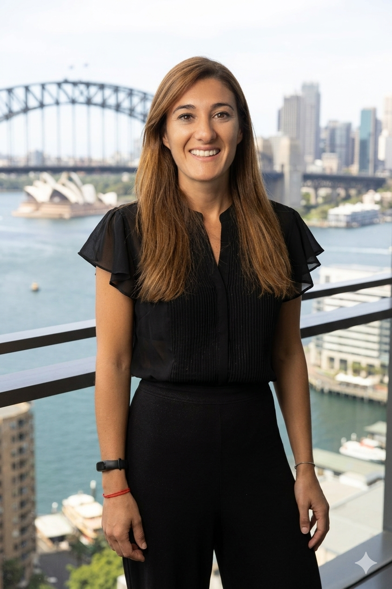

Sydney, Australia
Integrating worlds. Driving transformation.
Bridging people and organisations through strategy, planning, and change management. 18+ years of cross-sector experience across financial services, logistics, and consulting.
Work with me
About
"The papers say what my heart already knows — organisations and people need each other to thrive."
I hold a degree in Business Administration and have spent 18+ years working in the corporate world across multinational companies in Argentina and Australia. I am certified in Project Management in both countries, and hold a Business Agility certification.
I am passionate about transformation, processes, strategy, and design. My mission is to integrate worlds — illuminating organisations so they become environments where people genuinely grow, thrive, and feel at home.
Strategy
Analysing the current landscape, identifying pain points and opportunities, and setting clear short and long-term goals aligned to your mission and vision.
Planning
Building short-cycle action plans across teams and functions. Focused on breaking complexity down into achievable, measurable milestones.
Design & Monitoring
Regularly verifying that actions, processes, and objectives stay aligned with the defined path — keeping transformation on track from start to finish.
Services
For Organisations
Structural review of teams, processes, and workflows. Generation of new strategies based on pain points. End-to-end support from diagnosis through to execution and results.
For Individuals & Teams
Turning dreams into projects, projects into action, and action into a new reality. Designing the right structure for your goals at any stage — personal or professional.
For Projects
Building project structures from scratch. Defining scope, timelines, stakeholders, and KPIs. Digital content and workflow strategy for growing businesses.
For Finance & Operations
Redesigning financial processes to reduce inefficiencies, improve reporting cycles, and align operational workflows with business objectives.
Projects
Professional Services · Argentina · 2021–2023
CHALLENGE
A leading Argentine Tax & Legal firm (100+ professionals) was facing structural fragmentation, process inefficiencies across 5 practice areas, and limited performance visibility — constraining growth and profitability.
APPROACH
Appointed as PMO lead, I conducted a firm-wide organisational diagnostic, facilitated stakeholder interviews with Partners and Area Leaders, and mapped 55+ operational bottlenecks. I designed a Future-State Operating Model including governance structures, standardised service catalogues, KPI dashboards, and a technology migration roadmap.
RESULTS
Improved operational visibility across all practice areas. Enabled scalable service delivery and stronger governance. Transformation roadmap delivered to Partner group within agreed timeline across 5 coordinated workstreams.
Logistics & Transport · Argentina · 2016–2018
CHALLENGE
A multinational logistics group (5,000+ employees) carried significant stamp tax exposure across all Argentine provinces, with no strategic framework to manage or reduce fiscal risk at scale.
APPROACH
Led an independent organisational diagnostic of the company's stamp tax position across all jurisdictions. Negotiated directly with the Bolsa de Comercio de Bahía Blanca to secure tax exemptions and rate reductions on transporter contracts. Simultaneously redesigned end-to-end fiscal compliance processes and implemented SAP fiscal module with internal controls and executive dashboards.
RESULTS
65% reduction in stamp tax costs across all Argentine provinces. Compliance processes standardised across 3 departments. Key government client relationship preserved following critical operational failure.
Experience
Estudio MAB · Sydney, NSW / Buenos Aires, Argentina
Providing independent management consulting to SME clients across professional services, including organisational diagnostics, process redesign, financial analysis, and strategic advisory. Supporting clients in regulatory compliance, internal controls, and audit-ready documentation. Active engagements span professional practices in healthcare and psychology sectors.
Andersen Tax & Legal Argentina · Buenos Aires
Led firm-wide Operating Model Redesign & Transformation Programme as PMO, coordinating 5 workstreams across a 100+ professional organisation and reporting directly to the Partner group. Identified 55+ operational bottlenecks and designed the Future-State Operating Model including governance structures, KPIs, and technology migration roadmap (Bejerman → Onvio). Also led Tax Due Diligence for Pampa Energía S.A. — Argentina's leading integrated petrochemical producer — covering 10 analytical areas across ICL & IDC tax compliance (2019–2021).
OCASA S.A. — Organización Courier Argentina · Buenos Aires
Progressed from Business Analyst to Tax Supervisor over 9 years within a multinational logistics group. Led Stamp Tax Cost Reduction engagement — negotiated with Bolsa de Comercio de Bahía Blanca to secure tax exemptions, achieving a 65% reduction in stamp tax costs across all Argentine provinces. Led Fiscal Process Redesign across 3 departments following a critical compliance failure, preserving a key government client relationship. Implemented SAP fiscal module and established internal controls, KPI dashboards, and executive reporting frameworks.
RCBM Global Business Advisors · Buenos Aires — Member of Integra International (100+ countries)
Began consulting career providing professional advisory and consulting services to external clients including religious and educational institutions. Conducted business process analysis, delivered recommendations on financial control and compliance, and supported client decision-making through structured reporting and stakeholder engagement.
Argentina & Australia
Bachelor of Business Administration — Universidad de la Marina Mercante (2018) · Advanced Diploma in Program Management (in progress) · Diploma in Project Management · Certificate IV in Project Management Practice — Greenwich College, Sydney (2023–2025) · Certificate in Business Agility — ITBA (2021) · Expert in Project Management — UTN FRBA (2021) · NLP Practitioner Certification (2022).
Get in touch
"Someone is sitting in the shade today because someone planted a tree a long time ago."
— Warren Buffett